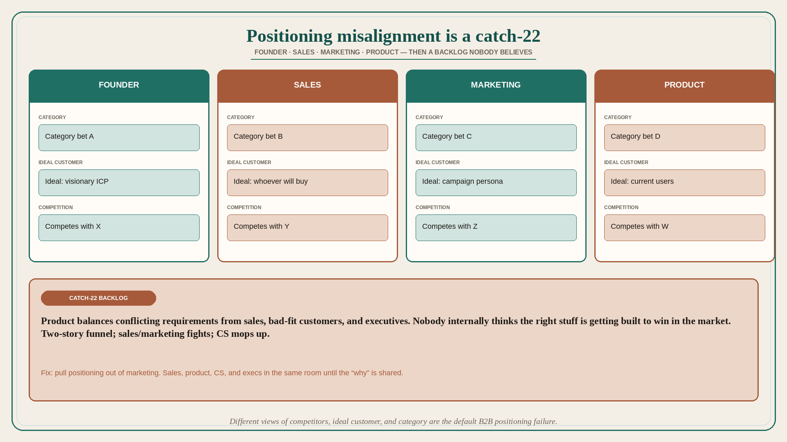

Positioning misalignment is a roadmap catch-22
Source: April Dunford (@aprildunford)
original post
What it claims
The most common positioning problem Dunford sees at B2B startups is misalignment: founders, sales, marketing, and product all have slightly different views on competition, ideal customers, and market category. That causes a bunch of problems. Interdepartmental squabbling: marketing and sales spend too much time arguing over target customers and value props; conflict reduces cooperation and all the good that happens when sales and marketing see eye to eye. Customer confusion: prospects get one story in the front half of the funnel and another in the latter stages; warped expectations leave CS mopping up the misperception mess. Product roadmap weirdness: product teams balance conflicting requirements from sales, bad-fit customers, and often executives/founders, and end up in a catch-22 where nobody internally thinks the right stuff is getting built to win in the market. The fix is to bring positioning work out of the marketing department. It needs to be a group effort where marketing, sales, product, CS, and the execs get it all on the table and get in alignment. Cross-functional positioning means each function knows the “why” behind it. Result: less conflict, faster/better marketing and sales execution, happier customers, and — most importantly — revenue acceleration.
Why it matters for a PO
Conflicting “who we are for” views show up as a Frankenstein backlog: sales’ bad-fit deals, founders’ category bets, marketing’s campaign promises. The PO cannot sequence a winning roadmap while those views stay private. Positioning is not a marketing ticket; it is the group conversation that ends the catch-22.
3 takeaways
- Different views of competitors, ideal customer, and category are the default B2B positioning failure.
- Misalignment produces sales/marketing fights, two-story funnels, and a roadmap nobody believes will win.
- Pull positioning out of marketing; put sales, product, CS, and execs in the same room until the “why” is shared.
Practice this week
Write four columns: competition, ideal customer, category, unique value. Fill them independently from (a) sales, (b) the current backlog, (c) whatever marketing ships. Circle the mismatches. Book one 45-minute alignment on the worst mismatch before adding another story that serves a bad-fit request.